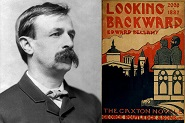
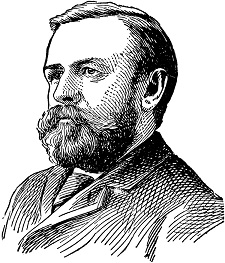

Американский писатель-социалист Эдвард Беллами в 1888 году выпустил роман-утопию «Взгляд назад», в котором он описал, как будет выглядеть мир победившего социализма. Его центром должен был стать универмаг, управление обществом подчинялось Всеобщей корпорации,
люди ни в чем не знали бы нужды и уходили не пенсию в 45 лет
«Взгляд назад» была написана под непосредственным влиянием тех быстрых сдвигов и чрезвычайного напряжения, которые имели место в те годы; многим тогда казалось, что эта книга представляет практическое разрешение насущных вопросов
 В Утопии Беллами социализм неизбежно принимает механистический уклон: голое уравнение во всем, почти военная регламентация труда, бюрократическая организация, суровость жизни, ценность,
приписываемая механическим изобретениям, совершаемым ради самих изобретений. По мысли Беллами, в 2000 году все будут жить примерно так, как обеспеченные круги средней буржуазии жили в Бостоне в 1886 году. В универсальных магазинах
Беллами видел ростки будущего и настаивал на том, что рабочие и мелкие торговцы должны смириться с изменениями, которые несёт новая форма торговли.
 Многие из социалистических реформаторов конца XIX века, особенно английские лейбористы, восторгались идеями Эдварда Беллами. Националистическое движение (местный извод социализма),
основанное Беллами, выступало против всех и всяческих форм партикуляризма.
В США на Беллами стали смотреть, как на творца социализма. Даже в Англии, где социализм имел более длинную историю, где лучше знали марксизм, существовала сильная тенденция признать авторитетность изображенной Беллами картины
жизни при социализме
После нескольких лет популярности идей Беллами в Европе, они сошли на нет – преобладающим течением здесь стал марксизм (пусть и реформированный позднее – немецкой и итальянской социалистическими школами). А
вот в США воззрения Беллами легли в основу теорий левого крыла Демократической партии.
Идеи из «Взгляда назад» мы видим сегодня в виде глобального супермаркета и общества потребления, и власти крупных корпораций. Но пока не видим «свободы от труда», пропагандируемого Беллами – вероятно, это пророчество американского
социалиста сбудется через несколько десятилетий при почти сплошной роботизации производства (в том числе – офисного).